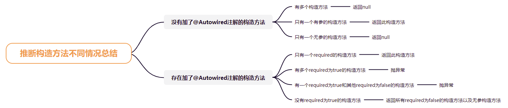

Spring推断构造方法


Spring中的一个bean，需要实例化得到一个对象，而实例化就需要用到构造方法。
一个构造方法
一般情况下，一个类只有一个构造方法：
- 要么是无参的构造方法
- 要么是有参的构造方法
如果只有一个无参的构造方法，那么实例化就只能使用这个构造方法了。 如果只有一个有参的构造方法，那么实例化时能使用这个构造方法吗？要分情况讨论：
- 使用AnnotationConfigApplicationContext，会使用这个构造方法进行实例化，那么Spring会根据构造方法的参数信息去寻找bean，然后传给构造方法
- 使用ClassPathXmlApplicationContext，表示使用XML的方式来使用bean，要么在XML中指定构造方法的参数值(手动指定)，要么配置autowire=constructor让Spring自动去寻找bean做为构造方法参数值。
上面是只有一个构造方法的情况，那么如果有多个构造方法呢？
多个构造方法
又分为两种情况，多个构造方法中存不存在无参的构造方法。
分析：一个类存在多个构造方法，那么Spring进行实例化之前，该如何去确定到底用哪个构造方法呢？
- 如果开发者指定了想要使用的构造方法，那么就用这个构造方法
- 如果开发者没有指定想要使用的构造方法，则看开发者有没有让Spring自动去选择构造方法
- 如果开发者也没有让Spring自动去选择构造方法，则Spring利用无参构造方法，如果没有无参构造方法，则报错
针对第一点，开发者可以通过什么方式来指定使用哪个构造方法呢？
- xml中的
标签，这个标签表示构造方法参数，所以可以根据这个确定想要使用的构造方法的参数个数，从而确定想要使用的构造方法 - 通过@Autowired注解，@Autowired注解可以写在构造方法上，所以哪个构造方法上写了@Autowired注解，表示开发者想使用哪个构造方法，当然，它和第一个方式的不同点是，通过xml的方式，我们直接指定了构造方法的参数值，而通过@Autowired注解的方式，需要Spring通过byType+byName的方式去找到符合条件的bean作为构造方法的参数值
再来看第二点，如果开发者没有指定想要使用的构造方法，则看开发者有没有让Spring自动去选择构造方法，对于这一点，只能用在ClassPathXmlApplicationContext，因为通过AnnotationConfigApplicationContext没有办法去指定某个bean可以自动去选择构造方法，而通过ClassPathXmlApplicationContext可以在xml中指定某个bean的autowire为constructor，虽然这个属性表示通过构造方法自动注入，所以需要自动的去选择一个构造方法进行自动注入，因为是构造方法，所以顺便是进行实例化。
当然，还有一种情况，就是多个构造方法上写了@Autowired注解，那么此时Spring会报错。 但是，因为@Autowired还有一个属性required，默认为ture，所以一个类中，只有能一个构造方法标注了@Autowired或@Autowired（required=true），有多个会报错。但是可以有多个@Autowired（required=false）,这种情况下，需要Spring从这些构造方法中去自动选择一个构造方法。
源码思路
- AbstractAutowireCapableBeanFactory类中的createBeanInstance()方法会去创建一个Bean实例
- 根据BeanDefinition加载类得到Class对象
- 如果BeanDefinition绑定了一个Supplier，那就调用Supplier的get方法得到一个对象并直接返回
- 如果BeanDefinition中存在factoryMethodName，那么就调用该工厂方法得到一个bean对象并返回
- 如果BeanDefinition已经自动构造过了，那就调用autowireConstructor()自动构造一个对象
- 调用SmartInstantiationAwareBeanPostProcessor的determineCandidateConstructors()方法得到哪些构造方法是可以用的
- 如果存在可用得构造方法，或者当前BeanDefinition的autowired是AUTOWIRE_CONSTRUCTOR，或者BeanDefinition中指定了构造方法参数值，或者创建Bean的时候指定了构造方法参数值，那么就调用autowireConstructor()方法自动构造一个对象
- 最后，如果不是上述情况，就根据无参的构造方法实例化一个对象
autowireConstructor()
- 先检查是否指定了具体的构造方法和构造方法参数值，或者在BeanDefinition中缓存了具体的构造方法或构造方法参数值，如果存在那么则直接使用该构造方法进行实例化
- 如果没有确定的构造方法或构造方法参数值，那么
- 如果没有确定的构造方法，那么则找出类中所有的构造方法
- 如果只有一个无参的构造方法，那么直接使用无参的构造方法进行实例化
- 如果有多个可用的构造方法或者当前Bean需要自动通过构造方法注入
- 根据所指定的构造方法参数值，确定所需要的最少的构造方法参数值的个数
- 对所有的构造方法进行排序，参数个数多的在前面
- 遍历每个构造方法
- 如果不是调用getBean方法时所指定的构造方法参数值，那么则根据构造方法参数类型找值
- 如果时调用getBean方法时所指定的构造方法参数值，就直接利用这些值
- 如果根据当前构造方法找到了对应的构造方法参数值，那么这个构造方法就是可用的，但是不一定这个构造方法就是最佳的，所以这里会涉及到是否有多个构造方法匹配了同样的值，这个时候就会用值和构造方法类型进行匹配程度的打分，找到一个最匹配的
为什么分越少优先级越高？
主要是计算找到的bean和构造方法参数类型匹配程度有多高。
假设bean的类型为A，A的父类是B，B的父类是C，同时A实现了接口D 如果构造方法的参数类型为A，那么完全匹配，得分为0 如果构造方法的参数类型为B，那么得分为2 如果构造方法的参数类型为C，那么得分为4 如果构造方法的参数类型为D，那么得分为1
可以直接使用如下代码进行测试：
1 | Object[] objects = new Object[]{new A()}; |
所以，我们可以发现，越匹配分数越低。
@Bean的情况
首先，Spring会把@Bean修饰的方法解析成BeanDefinition：
- 如果方法是static的，那么解析出来的BeanDefinition中：
- factoryBeanName为AppConfig所对应的beanName，比如”appConfig”
- factoryMethodName为对应的方法名，比如”aService”
- factoryClass为AppConfig.class
- 如果方法不是static的，那么解析出来的BeanDefinition中：
- factoryBeanName为null
- factoryMethodName为对应的方法名，比如”aService”
- factoryClass也为AppConfig.class
在由@Bean生成的BeanDefinition中，有一个重要的属性isFactoryMethodUnique，表示factoryMethod是不是唯一的，在普通情况下@Bean生成的BeanDefinition的isFactoryMethodUnique为true，但是如果出现了方法重载，那么就是特殊的情况，比如：
1 |
|
虽然有两个@Bean，但是肯定只会生成一个aService的Bean，那么Spring在处理@Bean时，也只会生成一个aService的BeanDefinition，比如Spring先解析到第一个@Bean，会生成一个BeanDefinition，此时isFactoryMethodUnique为true，但是解析到第二个@Bean时，会判断出来beanDefinitionMap中已经存在一个aService的BeanDefinition了，那么会把之前的这个BeanDefinition的isFactoryMethodUnique修改为false，并且不会生成新的BeanDefinition了。
并且后续在根据BeanDefinition创建Bean时，会根据isFactoryMethodUnique来操作，如果为true，那就表示当前BeanDefinition只对应了一个方法，那也就是只能用这个方法来创建Bean了，但是如果isFactoryMethodUnique为false，那就表示当前BeanDefition对应了多个方法，需要和推断构造方法的逻辑一样，去选择用哪个方法来创建Bean。

...
...
Copyright 2021 sunfy.top ALL Rights Reserved